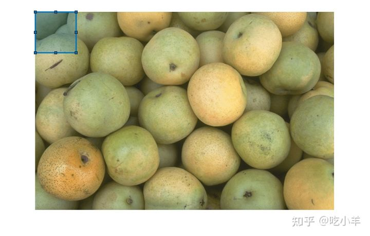
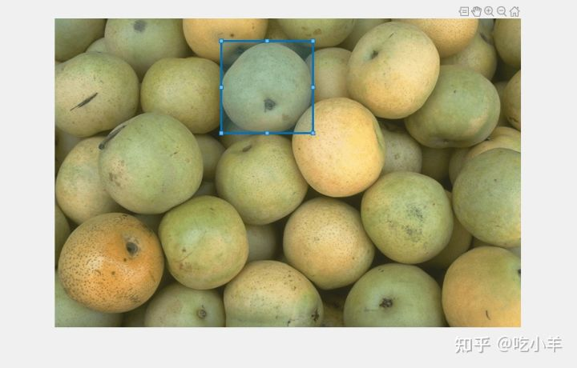

Home
本示例说明如何定义一个自定义等待函数，该函数会阻止 MATLAB命令行，直到您完成矩形的定位。
显示图像。
imshow('pears.png')
在图像的左上角绘制一个矩形 ROI。
h = drawrectangle('Position',[1 1 100 100]);

在您与矩形交互时，使用自定义等待函数阻止 MATLAB 命令行。这个例子指定了一个被调用的函数customWait（在例子的最后定义）。 当命令行被阻止时，调整矩形的大小和位置，使其包含一个梨。双击矩形以恢复customWait函数的执行。该函数返回矩形的最终位置。
pos = customWait(h)

pos = 1×4 262.0000 36.0000 144.0000 145.0000
这是在您单击 ROI 时阻止程序执行的自定义等待函数。当您完成与 ROI 的交互后，该函数会返回 ROI 的位置。
function pos = customWait(hROI) % Listen for mouse clicks on the ROI l = addlistener(hROI,'ROIClicked',@clickCallback); % Block program execution uiwait; % Remove listener delete(l); % Return the current position pos = hROI.Position; end
当您双击 ROI 时，此单击回调函数将恢复程序执行。请注意，事件数据作为images.roi.ROIClickedEventData对象传递给回调函数，这使您可以定义响应不同类型操作的回调函数。例如，当您在按住 Shift 键的同时单击 ROI 或单击 ROI 的特定部分（例如标签）时，您可以定义回调函数以恢复程序执行。
function clickCallback(~,evt)
if strcmp(evt.SelectionType,'double')
uiresume;
end
end
======================================================================
我的测试结果及程序
下面是我测试的代码：

注：本文根据MATLAB官网内容修改而成。